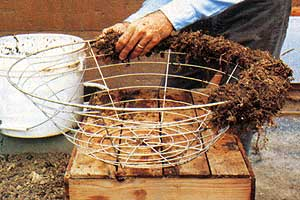

The Secrets Of Organic Container Growing
November/December 1985
by bob Kornegay
Lush ornamentals, indoor herbs, year-round vegetables, and colorful hanging baskets can all be yours . . . naturally.
It's quite a treat to pick a fresh sprig of rosemary or thyme in the middle of February . . . that little piece of summer fills the air with garden freshness. Just as enjoyable is the lush beauty of a hanging basket that's overflowing with ornamental plants (or vegetables!).
You can create such indoor plantings successfully and organically, but let me be honest: The task is not as easy as container gardening with chemical amendments. After all, an organic soil is not simply a mixture of wholesome ingredients but a medium filled with biological activity . . . and that activity is hard to maintain in a small, enclosed container. To do so, you'll have to apply both extra attention and some special know-how. I've been perfecting my indoor organic growing techniques for the past five years-three of those at MOTHER's Eco-Village-so I've learned a lot of the secrets of indoor organics the hard way: through experience. I'll be glad to share them with you here, especially as they pertain to two of my favorite indoor plantings-kitchen herbs and hanging ornamental baskets.
SOIL MIXES
Organic soil contains complex living nutrient chains that are in a constant state of renewal. Warm, moist gases from decomposition foster fungi and bacteria. Organic surface litter and subsoil minerals feed earthworms, which leave their humus-rich castings for plant roots. Everything is connected. To maintain a container organically, then, you have to feed the soil in order to feed the plant.
Consequently, organic container growing demands involvement- you can't just stick an herb, vegetable, or ornamental in a pot and forget it. The easiest and best long-term plan is to annually reconnect a contained plant with natural soil by growing it outdoors during the warm months. (I do this with almost all of my perennial herbs.) Another general rule is that large containers work a lot better than small ones: They provide more room for roots and soil organisms to intermingle. Of course, some plants-such as jade, dieffenbachia, and most flowers-do better when potbound. These will need to be repotted often to keep their soil fresh (unless they're particularly slow-growing).
The actual soil you use will have to be mixed carefully. The single most important quality you're after is good structure: The constant watering a pot or basket requires would soon break down ordinary garden soil. I start of by layering stones or pieces of broken clay in the bottom of any container to provide drainage. (I use clay-not plasticpots.) Then I add a layer of worm castings or quality compost made entirely from vegetative matter (no manure). If the pot will hold heavy feeders-such as tomatoes or blue flowers-I then put in a layer of ground-up egg-shells to provide extra calcium.
Next comes' a soil mix that's very similar to the seedling flat mix we use when starting plants for MOTHER's gardens. I combine five parts oak leaf mold . . . four parts good topsoil . . . two parts compost . . . two parts coarse, sharp sand . . . one to two parts worm castings . . . and a pinch of Earthrite C allpurpose organic fertilizer. [EDITOR'S NOTE: Earthrite C is available from Zook & Ranck, Rt. 1, Gap, PA 17527.] If I'm going to keep the plant contained for a long time, I'll add two parts oak bark chips to this mix to provide structure and a long-term nutrient supply.
This mix is mostly carbonaceous and very stable. Its loose texture opens a lot of surface area to soil microorganisms. You can also add one part perlite, vermiculite, or milled sphag num moss if you like. These help lighten the soil and have a remarkable ability to absorb and retain both water and air. They have no nutrient value, however.
Be sure that you mix your container soil ingredients on a clean surface-I wipe my counter first with a 10% chlorine bleach solution. You can keep any extra mix clean for later use by storing it in an airtight plastic bag.
Does all this soil mixing sound like a lot of work? Well, it's my belief that organic container growing demands a quality soil. However, sometimes I do make things simpler for myself by buying a high-quality potting mix from a nursery and adding compost (and/or worm castings), sea kelp, bonemeal, and Earthrite C. Such commercial mixes are mostly mineral and organic in origin, but they're generally sterile, as well. That's why I add some extra supplements to supply and help nourish soil fauna. I use this "nursery-based" mix mainly on ornamentals that will never be put directly into the garden, because good commercial potting soil can maintain its structure almost indefinitely.
If you're going to be keeping any plant in a container for more than a couple of months, you must provide it with some occasional supplemental feeding. Spraying the foliage about every ten days with a weak solution of seaweed is a very efficient way to feed it. Calcium nitrate can also be sprayed on-again in a well-diluted solution-to provide a direct nitrogen boost.
A whole bunch of homemade concoctions derived from fish, manure, herbs, or compost can be applied to the soil. But most of these- especially manure teas-should not be sprayed on the leaves: They will increase the likelihood of plant disease. Applied as liquid supplements to the soil, they'll feed the organisms that, in turn, feed the plant.
CULINARY HERBS
Probably the most useful plants for organic container growing are the culinary herbs. At MOM's self-reliant permaculture homestead, we've installed a large growing box, next to our kitchen's south-facing window, that's used for raising herbs. Wherever you grow them, though, you'll find them to be versatile and valuable.
Of course, the biggest benefit of maintaining an indoor herb garden is that it allows you to harvest fresh flavorings 12 months a year (not to mention being able to enjoy the plants' fragrance and the sight of them framing a frosty scene outside your window!). It'll also let you bring in those tender perennial herbs that would otherwise be lost to the first killing frost. In this way, you're not limited by your planting zone. In our zone-seven home we're able to "winter over" such delicate plants as sweet marjoram, rosemary, coriander, and several varieties of scented geraniums.
Some of the tender perennials-such as the pineapple, emerald, and indigo sages-generally get too large in just one season to move to containers. I take fall cuttings from such plants and raise those indoors.
I also grow some annuals that I start from direct seed in August or early September. These include sweet basil, cumin, some pepper grass or salad cress, small-leaved garland, and a nutty-tasting green called roquette.
To complete the collection, each fall I usually dig up one of each of the hardy culinaries just so I can have them fresh in the middle of winter. These include chives, oregano, common sage, a few varieties of thyme, apple and blue balsam mints, parsley, and shallots (for their tops).
HANGING BASKETS
I'm also fond of indoor ornamentals. But as all of you who have become addicted to growing these decorative species probably know, they do tend to accumulate.
While I sometimes trade some of my extras for different plants, I've found another use for surplus ornamentals: I arrange.them in large, multispecies hanging baskets that are quite dramatic. These picturesque islands, suspended at eye level or slightly below, really show off beautiful foliage and flowers. Spilling greenery in all directions, they catch your eye and pull you right into the center of miniature worlds. And if you use a dwarf semicascading or leaning juniper (or other suitable miniature evergreen) as a centerpiece, the whole assemblage takes on that bonsai quality of scalelessness. A few well-selected stones and driftwood pieces added to the basket complete the picture.
You can also make beautiful hanging baskets with herbs. Rosemaries, thymes, and parsleys are especially suited to ten-inch hanging containers. You can create a very woodsyfeeling assembly by having a two- or three-year-old creeping rosemary cascading over one side of a basket filled with the lacy bluegreen foliage of thyme, sage, and dwarf catnip.
You can even make a surprisingly attractive hanging basket with vegetables! A Small Fry tomato, planted in the center of a 24-inch basket, can be supported by a cord or rope hanger and surrounded by celery, spinach, bok choy, leaf lettuce, and French marigolds. Any plants you don't have room for on top can be set into the basket's sphagnum moss sides. (Leaf-not head-lettuce and flowers work best here.)
No matter what type of plants you're raising, though, don't use any invasive types. An orange mint, a Boston fern, an airplane plant, or a spider plant will soon take over a basket filled with less "pushy" species.
To make a hanging container garden, you'll first need to acquire a wire plant basket (available from most nurseries; I've used sizes from eight to thirty-six inches in diameter) and a bag of unmilled sphagnum moss. (You'll need a surprisingly large amount of the moss-a small, 12-inch basket alone uses about 450 cubic inches.) Make sure you get a solid hanging support-a hook with a molly bolt in Sheetrock just won't hold up a heavy container. Likewise, see that your cord or wire is secure. If you make a macrame hanger, use an inorganic material-not jute, which will rot. Maybe I sound overcautious here, but, believe me, being awakened in the middle of the night by the thud of a fallen 24-inch basket is not a pleasant experience!
Start by soaking the moss in a container of water. Then, while it's soaking, bend down the horizontal wire sections just below the rim, all the way around the basket. Then grab a handful of moss, squeeze the excess water out, fold it in half, and insert it snugly-mossy side out-into one of those just-under-the-rim sections of the basket. Continue until this section is filled with sphagnum protruding equally into and out of the basket. Then pull the bent wire back up into place to secure the moss. Follow this procedure, working around the basket, until you've completed a sphagnum ring. That will help hold your soil mix in and keep the rest of the moss you'll add from settling.
Next, start at the bottom of the basket and line it with unfolded, hand-size moss patties. Generously overlap these pieces as you go-so your soil mix won't fall out-and make sure you get up under the ring on top. The lining should be about 1 inch to 1-1/2 inches thick all over. Then pull off any loose pieces from around the outside to "clean up" the appearance of the basket. (If you're fortunate enough to have access to Spanish moss, you can use that tropical material instead of sphagnum and let it drape down from the basket for a dramatic effect.)
Now cover the bottom of the basket with the moist soil mix I described earlier, and gather your ornamentals. (You may well want to arrange some on a table, while they're still in their containers, to help you plan the composition of the basket.) You'll begin by installing the plants that poke out the sides of the container. Work a hole in the moss just above a horizontal wire. Fill the basket with soil to that level, then gently maneuver a side plant's root ball into the hole so that the top of its root is at the inside edge of the moss. Fill soil around that root ball and go on to the next horizontal plant.
Good choices for this application are ivies and other trailing plants. Set an odd number of these-probably three or five-around the sides of a foliar basket. On the other hand, if you're making a flower-laden basket of, say, pansies or petunias, you can plant them at every section to give your basket a thick burst of color.
Once you've filled the sides, you can put in your top plants. Start by setting tall ones in the center (or just off-center). Work different shapes of foliage around the basket and finally, near the rim, add a few that will cascade down. (Just watch that you don't let a hanging plant cover an ornamental in the side.)
One pattern I'm fond of for the center of a basket involves using a large split-leaf philodendron to provide shade and then hiding a delicate prayer plant or African violet in that shadow . . . sort of inviting people to look inside. (If you do use such delicate flowers as the African violet, leave them in their own containers, burying them, container and all, in the basket, and remember not to omit those small containers when feeding and watering the basket.)
A few of my other favorite basket ornamentals are table, button, maidenhair, and bird'snest ferns . . . bronze, grape, and Swedish ivies . . . mother-in-law's tongue . . . wandering Jew . . . rex begonia . . . fuchsia . . . some of the slow-growing small and midsize bromeliads . . . and schefllera (or umbrella plant).
That's it. All you have to do now is clean up . . . trim any blemished leaves from your plants . . . thoroughly water the soil . . . and set the basket out of direct sun for a day or so to "heal in."
NATURAL HANGERS
A particularly eye-catching variation of the hanging basket theme is the natural hanger. To make one, simply use a piece of driftwood, twisted tree branch, or half rotted stump section for your hanger instead of a basket. Look for a hollowed-out wood piece with some short limbs or branches for support handles. If you use a rotted stump, knock off all the pithy, soft material and let the whole thing dry thoroughly. If you've got a piece of ocean driftwood, soak it in water for a couple of days to wash out the salt. And if any piece has a deep, water-holding pocket in it, line that potential rot spot with a piece of plastic garbage bag to protect it.
To create a basket, attach a length of one-inch chicken wire across the front of the wood with nails or staples. Leave a little extra wire on top. Now, starting at the bottom, line the chicken wire with soaked sphagnum. Then add soil and side plants as you did before-making sure the soil is packed in well so it'll hold the moss in place. Plant the top, cover the soil mix there with moss, and fold over the extra chicken wire to hold that moss in place. If there are any blank areas in-your planting, you can make an opening and insert a small plant or cutting of, perhaps, sedum or wandering Jew.
CARE AND MAINTENANCE
Of course, taking care of those baskets, herbs, and other indoor plants is the real test of the indoor gardener. Here are a few helpful hints.
Light:
Providing the amount of light appropriate to your plants is essential-too much is just as harmful as too little. So when you're grouping greenery in a basket, try to combine types that have the same lighting needs. Most tropicals need partial shade, which is best supplied by the filtered, direct sunlight you get beneath a slatted porch roof, below a shade cloth, or-during warm weather-under a light shade tree. Most vegetables, flowers, and herbs want full sun-or only about 10 to 15% shade. If the light is uneven, rotate your plants or baskets every week or so.
Water: There's no set schedule for watering plants . . . they transpire much more water on a sunny day than on a cloudy one. Temperature, wind, and humidity also affect a plant's needs. The only way to know when to water is to stick your finger down into the soil-it should be moist, but not wet, to the touch. You may be surprised by what you discover. Mature plants, for instance, can have quite a thirst. I had a 16-inch Swedish-ivy basket that took up to two gallons a day in August! Still, be careful: Overwatering is the single biggest killer of container plants, primarily because it's so hard to detect. You can spot an underwatered plant; its leaves start to lose color and droop. An overwatered specimen, though, may look just fine until it suddenly keels over dead from root rot.
Water in late morning or late afternoon (but early enough so the water can evaporate from the leaves before evening). If possible, water from the bottom-set your pots in saucers and fill those saucers with water. The capillary action of the mix will draw up the liquid and nutrients. This technique will reduce soil compaction and help prevent the mix from drawing away from the wall of the pot. You can even take a hanging basket down once in a while and set it in a tub of water for a few minutes.
In general, glossy, leathery leaves enjoy being sprayed often, but water only the soil of fuzzy-leaved plants. Never use cold tap water in the winter. And if you must use city water, let it sit for at least a day first, so the chlorine can evaporate.
Fertilizing: I've already given some fertilizing advice. In addition to that, consider working fresh compost, worm castings, or other general organic amendments into the surface soil of any container that you've kept for more than a few months. On the other hand, cut back liquid feedings during the slow-growth winter months . . . and never give liquid tea to a severely dried-out basket, or you may overdose it. Also, don't feed liquid fertilizers to any plant until about three weeks after transplanting (unless you want to administer a weak solution of chamomile tea or vitamin B, right after transplanting to help it heal in).
General Care: The plant combinations in a hanging basket will change over time. Usually, you end up with two or three hardy perennials and periodically add annuals, such as flowers. Just keep cutting off lanky growth and unattractive or spent blooms . . . remove any leaves that have blemishes . . . and replace any plants that are dying.
If your plants are healthy, they'll continue to grow. And if your ornamentals start making babies, you can take that as a sign that you're doing something right ... namely, mastering the art of organic container growing!
 Organic hanging baskets can be decorative as well as practical, indoors and out. |
An eye- and palate-pleasing array of potted herbs. These grow at MOM's low-cost earth shelter. |
Whether in wire baskets or natural containers, organically grown displays brighten the home. |
|
 The first step in creating a hanging basket is to work a ring of sphagnum moss around the rim. |
 Clay ""strawberry pots"" are versatile containers . . . . . . And they can be used for ornamentals, as well. |
A well-organized hanging vegetable basket can be both attractive and extremely useful. |